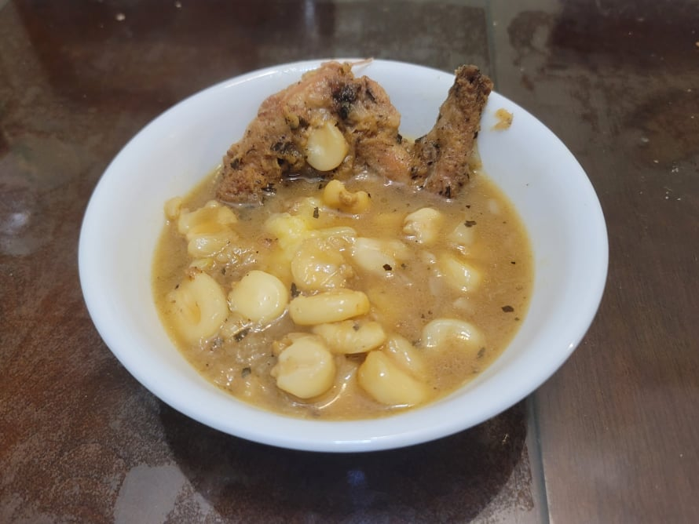

Rabbit Stew

Ingredients:
- 3 lb Rabbit, cut into 8 pieces
- 3 tbsp Corn flour or Fine cornmeal
- 2 tsp Dried wild bergamot
- 1/8 - 1/4 tsp Smoked salt
- 1/8 - 1/4 tsp Sumac
- 3 tbsp Sunflower oil
- 3-6 Wild onions, diced
- 3-4 cups Rabbit stock
- 1 cup Hominy, soaked overnight
- Salt, to taste
Instructions:
- Place and mix the corn flour, bergamot, salt, and sumac into a large gallon bag. Then, in batches, place a few rabbit pieces into the bag and shake until well coated.
- Heat the oil in a large pot over medium heat. In batches, sear the rabbit pieces, about 5 minutes per side. Then remove from the pot and reserve.
- Add the onion into the pot and sauté until they become slightly brown and translucent, about 5 minutes.
- Add in 1 cup of rabbit stock and deglaze the pot. Then add the rest of the stock, hominy, and the rabbit to the pot. Cover, bring to a simmer, and then reduce the heat to low. Let cook for 2 - 2 1/2 hours.
- Taste and add salt if needed. Serve with wild rice or cornmeal mush.